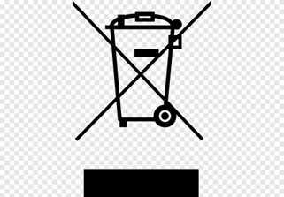

Equipamentos eletrônicos são equipamentos que para seu funcionamento, dependem de campos eletromagnéticos e/ou corrente elétricas. A partir de 11 de dezembro 2017 tudo o que se imaginava de equipamentos eletrônicos na sociedade foi divido em seis categorias. Foi feito o Decreto Lei nº152-D/2017 que distinguiu os equipamentos da seguinte forma:
1° Equipamentos de regulação da temperatura: frigoríficos, congeladores, Equipamentos de distribuição automática de produtos frios, equipamentos de ar condicionado, equipamentos desumidificadores, bombas de calor, radiadores a óleo, e outros equipamentos de regulação da temperatura que utilizem para o efeito outros fluidos que não a água.
2° Ecrãs, monitores e equipamentos: aparelhos de televisão, LCD, monitores, computadores portáteis (notebooks).
3° Lâmpadas: Lâmpadas fluorescentes (clássicas e compactas) Lâmpadas de descarga de alta intensidade, incluindo Lâmpadas de sódio sob pressão e lâmpadas de haletos metálicos, e LED.
4° Equipamentos de grandes dimensões: máquinas de lavar roupa, secadoras de roupa, máquinas de lavar louça, fogões, fornos eléctricos, luminárias, equipamento para reproduzir sons ou imagens, equipamento musical, aparelhos utilizados no tricô e tecelagem, macrocomputadores (mainframes), impressoras de grandes dimensões, copiadoras de grandes dimensões, caça -níqueis de grandes dimensões, dispositivos médicos de grandes dimensões, instrumentos de monitorização e controle de grandes dimensões, distribuidores automáticos de grandes dimensões que fornecem produtos e dinheiro.
5° Equipamentos de pequenas dimensões: aspiradores, aparelhos de limpeza de alcatifas, aparelhos utilizados na costura, luminárias, micro-ondas, equipamentos de ventilação, ferros de engomar, torradeiras, facas elétricas, cafeteiras elétricas, relógios, máquinas de aparar e barbear elétricas, balanças, calculadoras de bolso, aparelhos de rádio, câmeras de vídeo, equipamentos de alta-fidelidade, brinquedos elétricos e eletrônicos, equipamentos de desporto, computadores para ciclismo, mergulho, corrida, remo, e outros desportos, detectores de fumo, reguladores de aquecimento, termóstatos.
6° Equipamentos informáticos e de telecomunicação de pequenas dimensões: celulares, GPS, calculadoras de bolso, Routers, computadores pessoais, impressoras, telefones, consumíveis de Impressão.
Os equipamentos eletrônicos colocados no mercado nacional devem apresentar o símbolo abaixo, que indica a recolha seletiva dos eletrônicos.
A nossa espécie sempre buscou meios para facilitar as suas necessidades, dessa forma a roda foi criada, e desde então não paramos de buscar inovações e métodos para continuar evoluindo e otimizar as tarefas. Um exemplo claro que temos da importância dos equipamentos eletrônicos são os computadores e notebooks, que através deles conseguimos aprender diversas coisas, como línguas estrangeiras, cursos, receitas culinárias, e até mesmo formação em universidades. A sociedade vive rodeada de eletrônicos, alguns quase que imperceptíveis, como por exemplo:
- Detectores de fumaça: já estamos tão habituados a entrar em locais fechados com detectores de fumaça que nem reparamos mais. Porém é um equipamento eletrônico muito importante afim de evitar incêndios.
- Refrigeradores: Outro exemplo indispensável pela sociedade são as geladeiras e refrigeradores. Sem eles, seria muito difícil conservar e guardar alimentos. Assim como a invenção da roda, a invenção da geladeira foi um marco muito grande para a espécie humana, podendo assim consumir alimentos que fora da refrigeração teriam sua validade muito curta.
Dentre todos os eletrônicos produzidos apenas 3% do lixo eletrônico é descartado corretamente e o restante, 97%, não é monitorado, embora possa conter materiais de alto valor, como ouro e metais, que poderiam ser recuperados, segundo pesquisa da Organização das Nações Unidas (ONU). O estudo aponta desperdício de US$ 1,7 bilhão ao ano, além dos danos ao meio ambiente. O Brasil é o quinto maior produtor mundial de lixo eletrônico e deve descartar mais de 2,5 milhões de toneladas este ano.
Os equipamentos eletrônicos possuem diversos componentes tóxicos em suas estruturas. Depois que perdem sua função, se o descarte desse lixo eletrônico for feito de modo incorreto, esses resíduos tóxicos podem contaminar o solo e os lençóis freáticos, colocando em risco a saúde pública. Segundo o Centro de Tecnologia Mineral (CETEM), cerca de 70% dos metais pesados encontrados em lixões e aterros controlados são provenientes de equipamentos eletrônicos descartados.
Ultimamente, muitos estudos estão sendo feitos para descobrir a quantidade de componentes tóxicos em eletrônicos, que são cada dia mais comuns em nosso cotidiano. Um estudo do Centro de Ecologia Ann Arbor, em parceria com o Ifixit, pesquisou 36 celulares de diferentes marcas e modelos, analisando a quantidade de componentes tóxicos presente nos aparelhos, como chumbo, bromo, cádmio. São elementos que desde sua extração até o fim da vida do produto possuem a potencialidade de dano ao ambiente e à saúde.